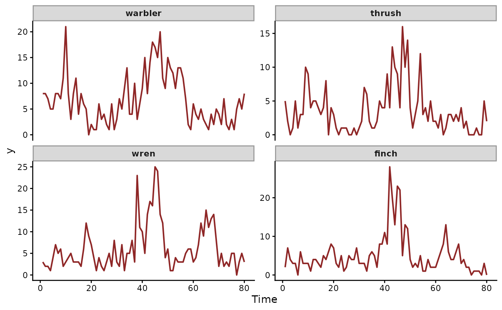

Simulated weekly bird song counts with hierarchically correlated AR(1) trends
Source:R/birdsong.R
birdsong.RdA multivariate count time series for four bird species observed weekly across 80 weeks. Each species has its own AR(1) latent trend; the four series are coupled through a contemporaneous innovation correlation matrix. Two species (warbler, thrush) rise together; two (wren, finch) move opposite to them. A shared cyclic seasonal smooth is added on week-within-year.
Format
A data.frame with 320 rows and the following fields:
- series
factor identifying the species (
warbler,thrush,wren,finch); duplicated asspeciesfor readability.- time
integer week index from 1 to 80.
- y
integer weekly count (Poisson sampled); duplicated as
count.- species
factor, alias of
series.- week
integer week index, alias of
time.- week_in_year
integer week within the annual cycle (1..52), used for the shared seasonal smooth.
- count
integer weekly count, alias of
y.
Details
An independent-AR fit (trend_formula = ~ AR(p = 1)) treats the
four trajectories as unrelated. trend_formula = ~ AR(p = 1, cor = TRUE) recovers the cross-species correlation that couples them.
True generative components:
Species random intercepts (centred) on the log scale.
Shared cyclic seasonal smooth (mgcv
bs = "cc") on week-within-year.Hierarchically correlated AR(1) trends with
phi = 0.7and innovation standard deviation 0.35. The 4 x 4 innovation correlation matrix sets(warbler, thrush)against(wren, finch).
See also
AR() for the trend, residual_cor() to extract the fitted
correlations between species, mvgam_data() to check the data.
Examples
data(birdsong)
mvgam_data(birdsong, family = poisson())
#> ✔ Data check passed for family 'poisson (link = log)'.
#> • series: 4 levels
#> • time: 1 to 80
#> • n obs: 320 (0 NA)

# \dontrun{
# A model with the structure the data were simulated from
mod <- mvgam(
formula = y ~ s(week_in_year, bs = "cc", k = 8) +
s(species, bs = "re"),
trend_formula = ~ AR(p = 1, cor = TRUE),
data = birdsong,
family = poisson(),
chains = 2, silent = 2
)
summary(mod)
#> Family: poisson
#> Links: mu = log
#> Formula: y ~ s(week_in_year, bs = "cc", k = 8) + s(species, bs = "re")
#> Data: birdsong (Number of observations: 320)
#> Series: 4
#> Trends: AR(1)
#> Draws: 2 chains, each with iter = 2000; warmup = 1000; thin = 1;
#> total post-warmup draws = 2000
#>
#> == Observation Model ==
#> Smoothing Spline Hyperparameters:
#> Estimate Est.Error l-95% CI u-95% CI Rhat Bulk_ESS
#> sds(sweek_in_year_1) 0.52 0.22 0.25 1.09 1.01 454
#> sds(sspecies_1) 0.53 0.36 0.16 1.54 1.00 741
#> Tail_ESS
#> sds(sweek_in_year_1) 723
#> sds(sspecies_1) 1143
#>
#> Regression Coefficients:
#> Estimate Est.Error l-95% CI u-95% CI Rhat Bulk_ESS Tail_ESS
#> Intercept 1.42 0.31 0.75 2.06 1.00 1085 916
#>
#> == Trend Model ==
#> Trend Specific Parameters:
#> Estimate Est.Error l-95% CI u-95% CI Rhat Bulk_ESS
#> sigma_trend[warbler] 0.33 0.06 0.22 0.46 1.00 1251
#> sigma_trend[thrush] 0.44 0.10 0.26 0.63 1.00 1200
#> sigma_trend[wren] 0.38 0.07 0.26 0.52 1.00 1041
#> sigma_trend[finch] 0.32 0.07 0.19 0.47 1.00 1630
#> ar1_trend[warbler] 0.60 0.12 0.35 0.80 1.00 1164
#> ar1_trend[thrush] 0.40 0.23 -0.07 0.81 1.00 746
#> ar1_trend[wren] 0.51 0.15 0.20 0.78 1.01 886
#> ar1_trend[finch] 0.47 0.21 -0.02 0.82 1.00 1022
#> Tail_ESS
#> sigma_trend[warbler] 1371
#> sigma_trend[thrush] 1355
#> sigma_trend[wren] 1360
#> sigma_trend[finch] 1294
#> ar1_trend[warbler] 1306
#> ar1_trend[thrush] 768
#> ar1_trend[wren] 853
#> ar1_trend[finch] 1556
#>
#> Draws were sampled using sampling(NUTS). For each parameter, Bulk_ESS
#> and Tail_ESS are effective sample size measures, and Rhat is the potential
#> scale reduction factor on split chains (at convergence, Rhat = 1).
#>
#> Next steps:
#> - `pp_check(fit)`: posterior predictive checks
#> - `residual_cor(fit)`: implied cross-series correlations
#> - `forecast(fit, newdata = ...)`: out-of-sample forecasts
#> - `lfo_cv(fit)`: leave-future-out model comparison
#> - `conditional_effects(fit)`: covariate effects
#> Use `how_to_cite(fit)` for a methods paragraph and `methods_md(fit)` for its equations.
# }